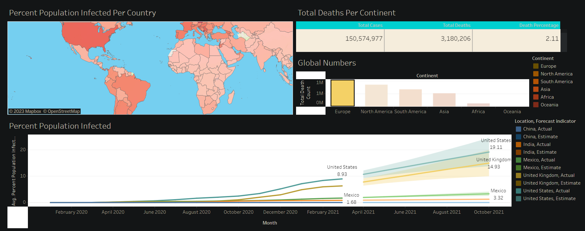
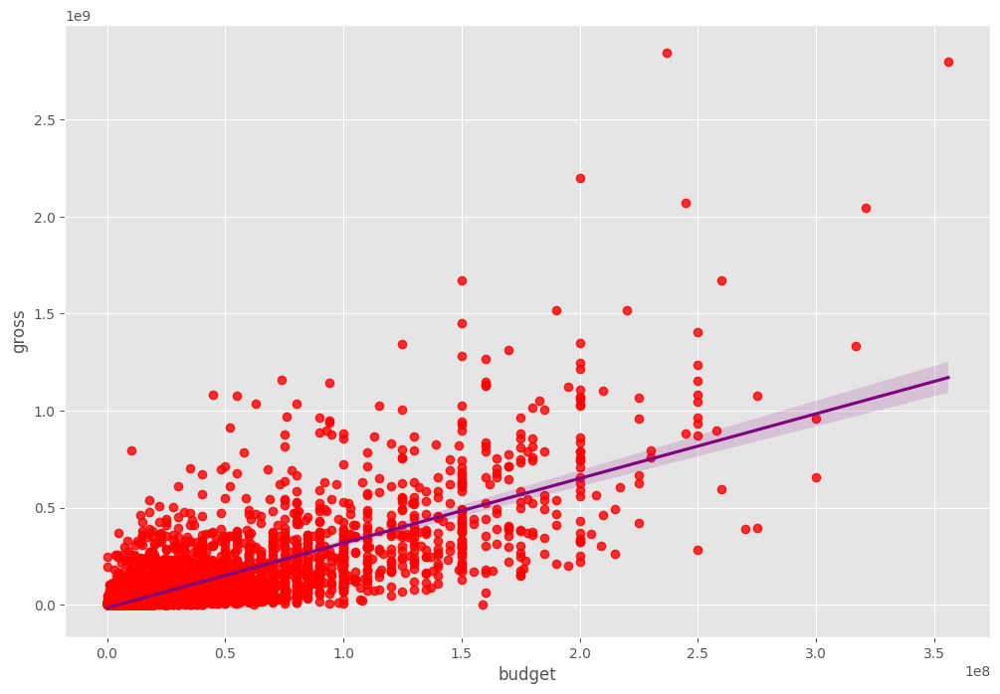

Cleaned and standardized housing data in SQL Server for enhanced usability. Employed SQL queries to address inconsistencies, remove duplicates, and ensure data integrity, resulting in a refined dataset for more accurate analyses.


Conducted a formalized data exploration of COVID-19 utilizing SQL Server, entailing comprehensive analysis and examination. Employed SQL querying techniques to investigate and interpret the COVID-19 dataset, enabling a structured and rigorous exploration of pertinent information.

Utilizing the BeautifulSoup library in Python, I implemented a web scraping process to extract detailed information from British Airways reviews on a designated webpage. Through systematic parsing techniques, the script systematically navigated the webpage's structure, allowing for the collection of comprehensive insights and data related to customer experiences with British Airways.

Effectively communicated insights on COVID-19 through impactful visualizations created with Tableau, offering a clear and compelling presentation of key findings.

Conducted an in-depth correlation analysis in Python, leveraging Seaborn for visualizations and utilizing Pandas and NumPy for data manipulation. The analysis centered on examining the intricate relationship between variables, with a specific emphasis on understanding the impact of budget on gross.